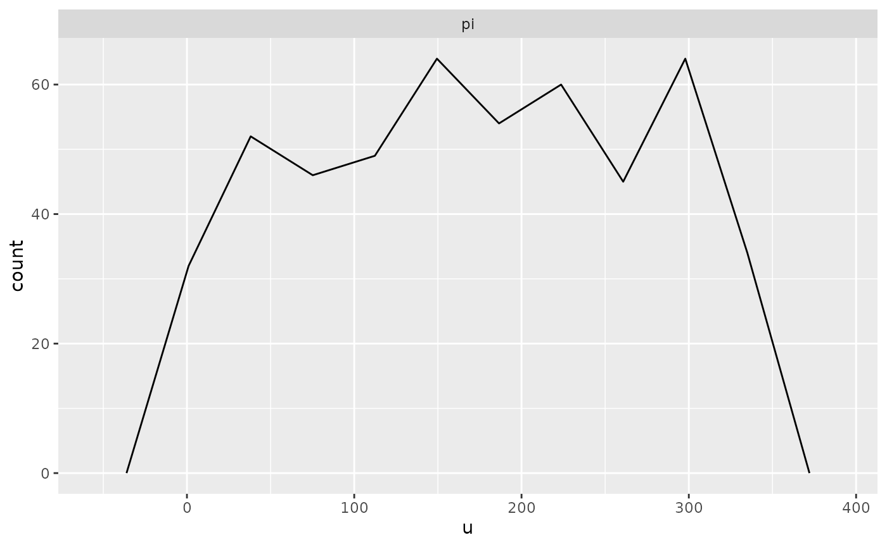

Here is a Stan program for a beta-binomial model
data {
int<lower = 1> N;
real<lower = 0> a;
real<lower = 0> b;
}
transformed data { // these adhere to the conventions above
real pi_ = beta_rng(a, b);
int y = binomial_rng(N, pi_);
}
parameters {
real<lower = 0, upper = 1> pi;
}
model {
target += beta_lpdf(pi | a, b);
target += binomial_lpmf(y | N, pi);
}
generated quantities { // these adhere to the conventions above
int y_ = y;
vector[1] pars_;
int ranks_[1] = {pi > pi_};
vector[N] log_lik;
pars_[1] = pi_;
for (n in 1:y) log_lik[n] = bernoulli_lpmf(1 | pi);
for (n in (y + 1):N) log_lik[n] = bernoulli_lpmf(0 | pi);
}Notice that it adheres to the following conventions:
- Realizations of the unknown parameters are drawn in the
transformed datablock are postfixed with an underscore, such aspi_. These are considered the “true” parameters being estimated by the corresponding symbol declared in theparametersblock, which have the same names except for the trailing underscore, such aspi. - The realizations of the unknown parameters are then conditioned on
when drawing from the prior predictive distribution in
transformed datablock, which in this case isint y = binomial_rng(N, pi_);. To avoid confusion,ydoes not have a training underscore. - The realizations of the unknown parameters are copied into a
vectorin thegenerated quantitiesblock namedpars_ - The realizations from the prior predictive distribution are copied
into an object (of the same type) in the
generated quantitiesblock named `y_. This is optional. - The
generated quantitiesblock contains an integer array namedranks_whose only values are zero or one, depending on whether the realization of a parameter from the posterior distribution exceeds the corresponding “true” realization, which in this case isranks_[1] = {pi > pi_};. These are not actually “ranks” but can be used afterwards to reconstruct (thinned) ranks. - The
generated quantitiesblock contains a vector namedlog_likwhose values are the contribution to the log-likelihood by each observation. In this case, the “observations” are the implicit successes and failures that are aggregated into a binomial likelihood. This is optional but facilitates calculating the Pareto k shape parameter estimates that indicate whether the posterior distribution is sensitive to particular observations.
Assuming the above is compile to a code stanmodel named
beta_binomial, we can then call the sbc
function
At which point, we can then call
print(output)## 0 chains had divergent transitions after warmup
plot(output, bins = 10) # it is best to specify the bins argument yourself
References
Talts, S., Betancourt, M., Simpson, D., Vehtari, A., and Gelman, A. (2018). Validating Bayesian Inference Algorithms with Simulation-Based Calibration. arXiv preprint arXiv:1804.06788